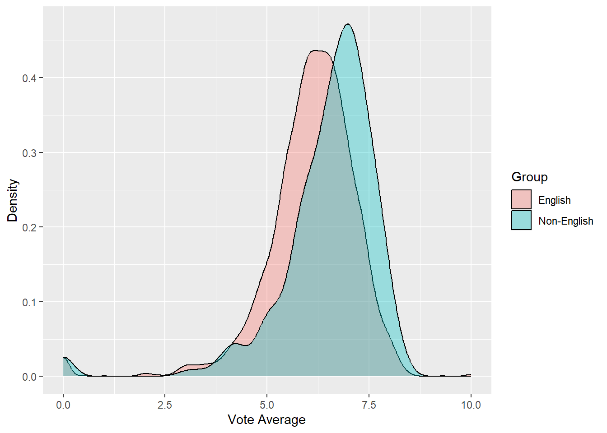
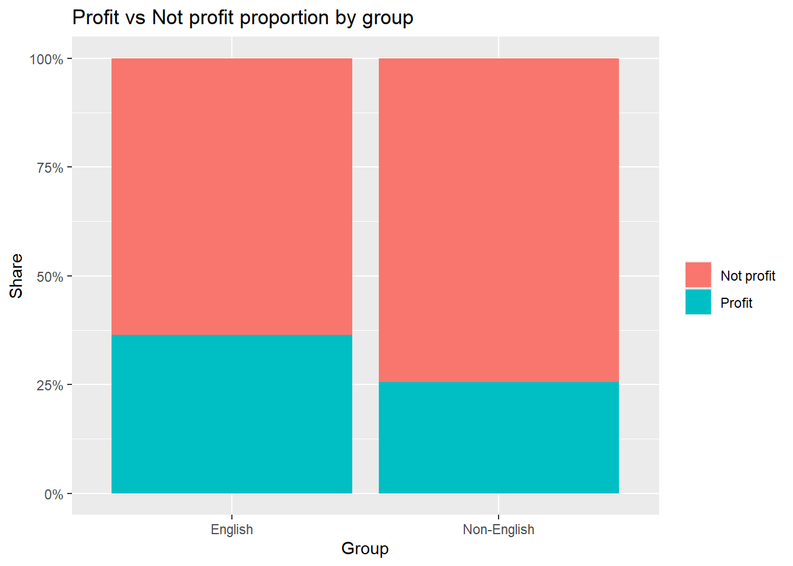

The following object is masked from 'package:purrr':
flatten
This chunk loads the TMDB 5000 movie dataset and constructs two key variables for downstream analyses. First, release_decade translates each film’s release_date into a decade factor (1980s through 2020s), which we use as a multi-level grouping variable. Second, english_group classifies films based on original_language, with “English” assigned when the lower-cased code equals “en” and “Non-English” otherwise. These transformations align the raw data with the Study 1 requirements by creating one binary factor for two-group comparisons and one categorical factor for 3–6 group comparisons.
This chunk narrows the data to analytically usable observations. We retain only rows with a parsable release date, nonempty genres, and nonnegative revenue and budget. We also restrict vote_average to the valid [0, 10] range. This filtering step improves internal validity by removing records that would otherwise contribute noise or impossible values, while preserving the sample size needed for the required hypothesis tests and graphics.
Welch Two Sample t-test
data: vote_average by english_group
t = -5.3673, df = 329.18, p-value = 1.512e-07
alternative hypothesis: true difference in means between group English and group Non-English is not equal to 0
90 percent confidence interval:
-0.5276455 -0.2795684
sample estimates:
mean in group English mean in group Non-English
6.089010 6.492617
# A tibble: 2 × 4
english_group n mean sd
<chr> <int> <dbl> <dbl>
1 English 4477 6.09 1.13
2 Non-English 298 6.49 1.27
df_filter |>ggplot(aes(vote_average, fill = english_group)) +geom_density(alpha =0.35) +labs(x ="Vote Average", y ="Density", fill ="Group")

This chunk compares mean user ratings between English and Non-English films using a Welch two-sample t-test with a 90% confidence interval. In the filtered data, the English group contains 4,477 films with an average rating of about 6.09 (sd ≈ 1.13), whereas the Non-English group contains 298 films with an average rating of about 6.49 (sd ≈ 1.27). The test statistic is approximately −5.37 with roughly 329 degrees of freedom, yielding a p-value on the order of 10⁻⁷. The 90% confidence interval for the mean difference (English minus Non-English) is roughly [−0.53, −0.28], which excludes zero. Taken together with the density plot—which shows the Non-English distribution shifted to the right—these results indicate that Non-English films receive modestly but credibly higher average ratings than English-language films, and the magnitude of the difference is on the order of four-tenths of a rating point on a 0–10 scale.
Task c
df_c <- df_filter |>mutate(log_revenue =log1p(revenue)) |>filter(!is.na(release_decade)) |>group_by(release_decade) |>mutate(n_decade =n()) |>ungroup() df_c |>ggplot(aes(x = release_decade, y = log_revenue)) +geom_boxplot() +labs(x ="Release decade", y ="log(Revenue + 1)",title ="Distribution of log(Revenue+1) by decade")
This block examines decade differences in revenue on a log scale. The boxplot of log(Revenue + 1) by release_decade suggests modest shifts across decades, and the one-way ANOVA formalizes that pattern by testing equality of decade means. Tukey’s 90% confidence intervals then identify which specific decade pairs differ; interpret any pair whose interval excludes zero as a credible difference at the assignment’s 90% level, and read the sign of the contrast to determine which decade has the higher mean.
# A tibble: 5 × 4
metric estimate ci90_lwr ci90_upr
<chr> <dbl> <dbl> <dbl>
1 Risk_English (p1) 0.364 NA NA
2 Risk_NonEnglish (p2) 0.255 NA NA
3 RD = p1 - p2 0.109 0.0641 0.154
4 RR = p1/p2 1.43 1.21 1.69
5 OR 1.67 1.33 2.12
df_d |>mutate(profit =factor(profit, levels =c(0,1), labels =c("Not profit","Profit"))) |>count(english_group, profit) |>group_by(english_group) |>mutate(pct = n /sum(n)) |>ungroup() |>ggplot(aes(x = english_group, y = pct, fill = profit)) +geom_col(position ="fill") +scale_y_continuous(labels = scales::percent) +labs(x ="Group", y ="Share", fill ="", title ="Profit vs Not profit proportion by group")

This block evaluates whether profitability differs by language using a 2×2 table with profit = I(revenue > budget) as the outcome and english_group as the exposure. We report three effect measures with 90% confidence intervals—risk difference (RD), relative risk (RR), and odds ratio (OR). A 90% CI for RD that excludes zero (and RR/OR intervals that exceed one) indicates English-language films have a credibly higher probability of being profitable; if the intervals include the null values, the data do not provide sufficient evidence of a difference at the 90% level.
This chunk expands multi-label genres into a long format so each film contributes to all of its tags, selects the Top-K genres by overall frequency, and then maps color to the mean of log(Revenue + 1) within each decade–genre cell. Darker tiles indicate decade–genre combinations associated with higher average revenues on the log scale. The follow-up cross-tabulation reports counts by decade and genre together with row-wise proportions, which show how the composition of popular genres shifts over time (for example, Drama typically occupies the largest share and Comedy the second largest, while smaller genres fluctuate in relative weight). A Pearson chi-square test applied to the count table assesses whether decade and genre are independent; the test rejects independence at conventional levels, implying that the distribution of genres changes across decades. Because the heatmap summarizes average log revenue rather than counts, and because each film contributes to all of its genres, these EDA results should be interpreted descriptively: they highlight where revenue tends to be stronger without implying mutually exclusive group membership or causal effects.